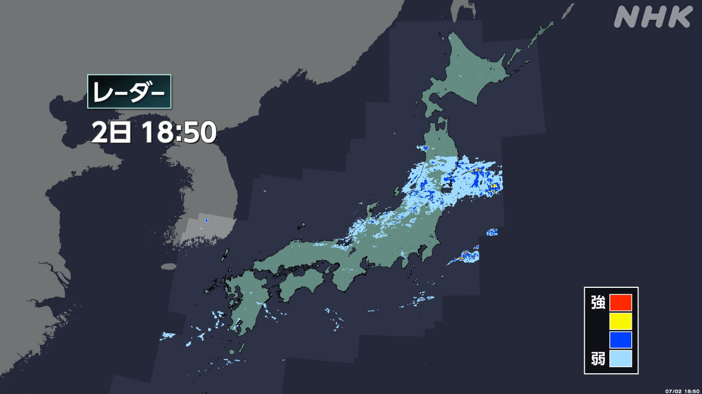

最新ニュース
1️⃣ 熊本県や大分県などでたくさん雨が降って被害が出た

九州北部地方では、2日朝早く、たくさん雨が降りました。
熊本県や大分県などでは、「線状降水帯」ができて、同じ所でたくさんの雨が降りました。
この雨で、被害が出ています。
熊本県小国町では、川の水があふれました。
川の近くにある旅館は、建物の中に川の水が入りました。雨で予約のキャンセルがあって、旅館に客はいませんでした。
大分県日田市では、山が崩れた所が10以上ありました。通ることができない道があるため、崩れた土や倒れた木を片づけています。
九州地方は、4日、またたくさん雨が降るかもしれません。気象庁は、新しい情報をチェックするように言っています。
2️⃣ ベネズエラの地震 亡くなった人が2000人より多くなった
ベネズエラで大きい地震が起こってから1週間になりました。この地震で亡くなった人は、2295人になりました。
地震の被害が大きい所では、ベネズエラやほかの国の専門の人たちが、壊れた建物の中にいる人を助けようとしています。
ラ・グアイラ州では、地震から6日たって、3歳の男の子が生きているのが見つかりました。大きな声で喜ぶ人や拍手する人もいました。
国連によると、地震から1週間になり、食べ物や飲む水が足りなくなっています。食べ物や避難する場所を作ることなどが必要になっています。
3️⃣ カブス鈴木誠也選手 大リーグで100本ホームランを打った
大リーグ、カブスの鈴木誠也選手が、1日のパドレスとの試合でホームランを打ちました。
大リーグで打った100本目のホームランです。
鈴木選手は、大リーグに入って5年になります。
鈴木選手は「外国で野球をするのは大変でした。チームの人たちと、いい時も悪い時も一緒に、もっと良くなろうと思ってやってきました」と話しました。
大リーグでホームランを100本以上打った日本の選手は、松井秀喜さん、イチローさん、大谷翔平選手、そして鈴木選手の4人です。
ドジャースの大谷選手は、今までに298本のホームランを打っています。300本まであと2本です。
4️⃣ 岩手県 海に入ってウニをとる「海女」 観光に来た人に見せる
岩手県久慈市で、「海女」と呼ばれる女性が、海の中に入ってウニをとっています。
毎年7月1日から、この海女の仕事を観光に来た人に見せています。1日は、4人の海女が海に入りました。
新しく海女になった人もいて、とったウニを持って海から顔を出すと、見ていた人たちは拍手しました。
海女がとったウニは、観光に来た人がすぐに買って食べることができます。
ウニを食べた男性は「海の塩の味がして、おいしかったです」と話していました。
- 〜ところ
- 〜など
- 〜や〜など
- 〜ている / 〜でいる
- 〜中
- 〜がある / 〜がいる
- 〜以上
- 〜ことができる
- 〜こと
- 〜ため
- 〜かもしれない / 〜かもしれません
- 〜ように
- 〜から
- 〜てから
- 〜になる
- 〜として
- 〜としている
- 〜によると
- 〜までに
- 〜まで
- 〜後 / 〜あと
vebaev.github.io
Generated: 2026-07-02 11:34:55 UTC